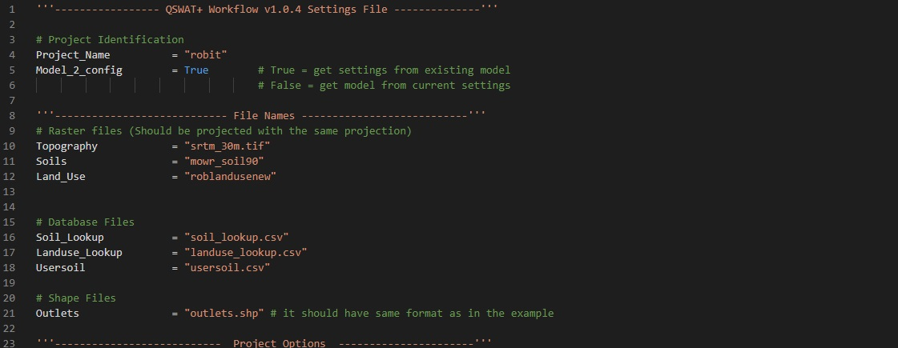

SWAT+ AW
SWAT+ Automatic Workflow Documentation
Version 1.0.4
-
format_align_centerIntroduction
SWAT is a time-continuous, semi-distributed hydrological model that has been widely used in various hydrological studies across the world. SWAT+ is a restructured and improved version of the SWAT model. QSWAT+ and SWAT+ Editor are currently the only interfaces for setting up SWAT+ models.
Reproducibility of science has come under scrutiny recently (Marcus, 2015) as it has been discovered that a large proportion of science is not reproducible (McNutt, 2014; Vasilevsky et al., 2013). In hydrology, modelling work is often not reproducible because of missing details on model setup. This software uses a config, which is a settings file, to build and run SWAT+ models. Users can share the config along with their published works to promote transparency as all model options are well documented in the file. Sharing the config and data also allows others to reproduce the models from scratch. -
codeSetting up software
Download and install QGIS 3.10 – 64-bit version from QGIS website (Download QGIS 3.10.3). Download and install SWAT+ Automatic Workflow (SWAT+ AW) using default settings. The installer can be found on the repository (SWAT+ AW Releases). This installer will install all the dependencies and set environmental variables. It is recommended that you use the installer but you can also setup all the dependencies and environmental variables manually. QGIS python does not ship with Pandas, geopandas and playhouse python packages but these python packages are used by the workflow. If you do not want to use the installer from the repository, you will need to install pandas, geopandas and playhouse python packages for the Python that ships with QGIS 3.10 (C:\Program Files\QGIS 3.10\apps\Python37). You will also need to install TauDEM5 binaries to C:\SWAT\SWATPlus\TauDEM5Bin (View this page). The workflow should be extracted to the Workflow Directory (C:\SWAT\SWATPlus\Workflow). The Workflow Directory should also be appended to the “path” environmental variable. It should also be added to the environmental variable “swatplus_wf_dir”.
-
data_usageData
The data requirements for the SWAT+ AW are the same as data requirements for QSWAT+ and SWAT+ Editor. Thus, users can use the same data formats as the GUI counterparts. For more information on SWAT+ data formats refer to QSWAT guide (Dile, Srinivasan, & George, 2017).

Figure 1: Directory structure of data prepared for the SWAT+ AW
Rasters files. i.e. Digital elevation model (DEM), land use map and soil map should be placed in the rasters directory within the Data folder. All shapefiles. i.e. outlet shapefile and river shapefile for ‘burn in’ should be placed in shapes directory. Files that have information that needs to be imported into project databases later should be placed in the tables directory. These files include land use and soil lookup tables, and soil properties table. All weather files should be placed in the weather directory. If you want to include calibrated parameters that should be applied to the model after set up, you should include the parameters file in the calibration directory. Remember to include the name of the calibration file in the config.
buildSetting up the config fileThe configuration information for setting up the model is in a settings file called ‘config.py’. Users can open and make changes to this file in any text file editor such as Notepad, Notepad++ and Visual Studio Code (recommended) . Go download the example_dataset.zip file to view an example of a filed config file. The following is a description of each section and how to fill it.
Project identification
This section identifies the name and type of the project (Figure 2). The project name should be filled on Project_Name. Model_2_config option identifies what type of project it is. If the SWAT model was set up in the QSWAT+ and SWAT+ Editor GUIs and the user wants to retrieve a config and dataset that will reproduce that model, the Model_2_config option should be set to True. To go from config and data to a SWAT+ model, set this option to False.
File names
In this section, all files that are to be used in the model setup are listed. This includes the names of the soil, land use and DEM raster files present in rasters directory (Figure 1). Note that file names should include file extensions if rasters are not in grid (commonly used with ArcGIS) format, as shown in Figure 2. Lookup files contain the soil type or land use classes represented by the values in the soil and land use raster files. The lookup files are contained in the tables’ directory (Figure 1) and should be listed in the Soil_Lookup and Landuse_Lookup lines for soil lookup file and land use lookup file respectively.
Figure 2: Project identification and file names sections in config.py
Database table file for soil properties (usersoil file) should be specified in the on the Usersoil variable as demonstrated in Figure 2. You should also list the name of the file that contains locations where outlets should be created within the model in the Outlet line under Shape Files section.
Project Options
For watershed delineation, you need to specify the channel and stream delineation thresholds using the Channel_Threshold and Stream_Threshold variables respectively. The maximum distance for snapping outlets to streams should also be entered in metres in the OUT_Snap_Threshold line under the Watershed Delineation section (Figure 3).

Figure 3: Project options section in config.py